Screening & diligence
Viability assessment and portfolio quality check. Identifying red flags and risks early to ensure the BUS is viable.

Spearheaded by Catalyst & Hyfin
The vulnerability
The current PAYGo solar model creates vulnerabilities for everyone touching it.
Total dependency on a single provider means that if a company fails, the technology locks and the lights go out — stripping customers of essential energy access through no fault of their own.
The absence of a safety net makes it nearly impossible to restructure during financial distress, turning manageable operational hurdles into total business collapses.
Without a back-up servicer, operator insolvency severs the technical and field-level links to underlying cash flows — substantial capital loss, stranded assets.
Operator-default risk is a roadblock for investors and rating agencies, preventing the massive investment needed to achieve universal energy access.
Unmanaged company failures compromise national electrification targets and undermine public trust in off-grid energy.
The answer
A reliable safety net for the entire PAYGo industry — keeping the lights on, the cash flowing, and capital protected.
Track record
in solar loans backstopped by BUS structures, originated by the Hyfin founding team in North America. We're bringing that infrastructure to the off-grid sector.
From setup to activation
Viability assessment and portfolio quality check. Identifying red flags and risks early to ensure the BUS is viable.
Triggers, mandates, and step-in rights defined. Core functionality, roles, and responsibilities established.
Legal agreements (BSA), data access signed. Pipelines established, CRM access arranged, test runs validate integration.
Pre-agreed triggers hit — insolvency, covenant breach, PAR threshold. Standby flips to active mode.
BUS assumes full control: data, payments, field operations, call centre. Customers stay on; collections keep flowing to lenders.
Portfolio handed back to a recapitalised operator, transferred to a new owner, or liquidated in an orderly fashion.
Flexible by design
Critical infrastructure for both today's lending needs and the future of securitization.
Frontier & emerging
Tailored for ASCENT, DARES, and similar large-scale initiatives where high-volume public and bank financing requires servicing resilience.
Long-term service contracts require ongoing performance monitoring — a BUS becomes structurally necessary.
Built for the sector
Commitments to the market, to capital providers, to companies, and to customers.
Professional-grade back-up servicing with strong value for money for investors and operators alike.
Harmonized with established CRM platforms, third-party call centres, and existing field networks wherever possible.
Structured as a social enterprise with clear roles, responsibilities, and triggers — agreed upfront with partners.
Designed with market sustainability in mind. Standards, protocols, partnerships, and governance shaped together — before any crisis.
Functions as investor insurance — securing payment continuity and preserving asset value during crisis.
Front-loaded work to test critical assumptions — stakeholder acceptance, financial viability, regulatory barriers — before scaling.
Operational components
Each required for a credible, investment-grade back-up servicer. Hover or tap any domain to see what it includes.
The team
Driving technical design of the BUS
Undertook the most substantive PAYGo BUS design scoping work (2021) and due diligence of incumbent instruments (2025) in the industry. Team comes from the PAYGo industry — a practitioner lens.
Co-developing the BUS alongside Catalyst
Founding team pioneered securitization in North America, originating over $20B in solar loans backstopped by BUS structures. Brings deep knowledge of commercial investor expectations and bankable structures.
Institutional backers supporting BUSco
Mobilized institutional capital underscores investors' view that a robust BUS is a must for the off-grid solar industry.
Get involved
PAYGo companies to pilot with us. Investors and lenders to embed the BUS into financing structures.
Share your feedback on broad principles. Tell us what works, what concerns you, what to consider.
Participate in Phase 1 design interviews. Help determine how the BUS functions, what data access looks like, how transitions are managed.
Sign a non-binding expression of interest. Helps us demonstrate market traction to funders and DFIs.
Warm intros to your lenders, peers, and service providers accelerate the loop of demand that makes BUSco a market standard.